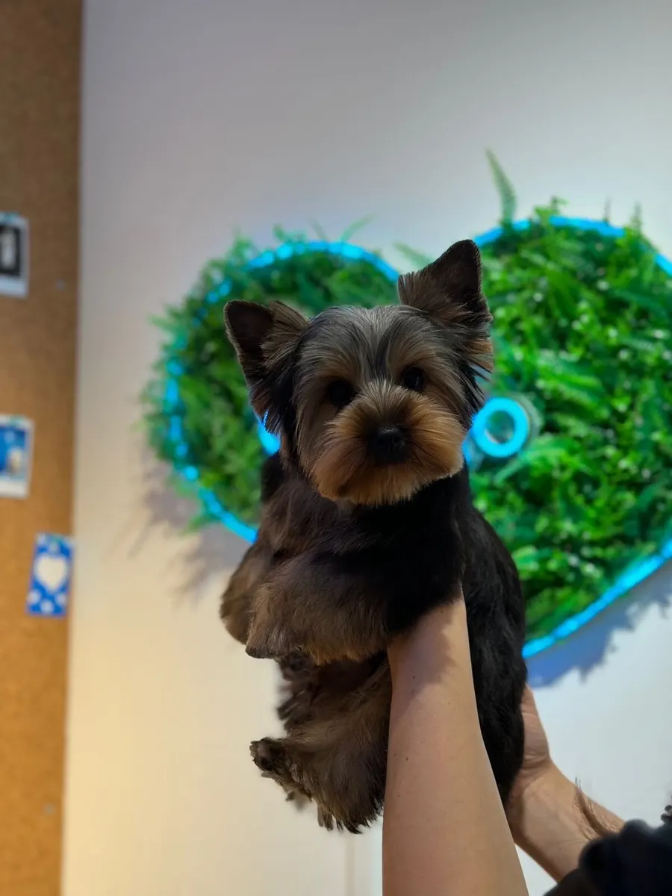
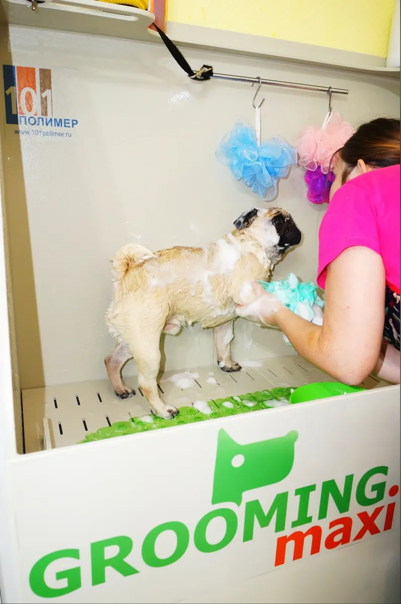
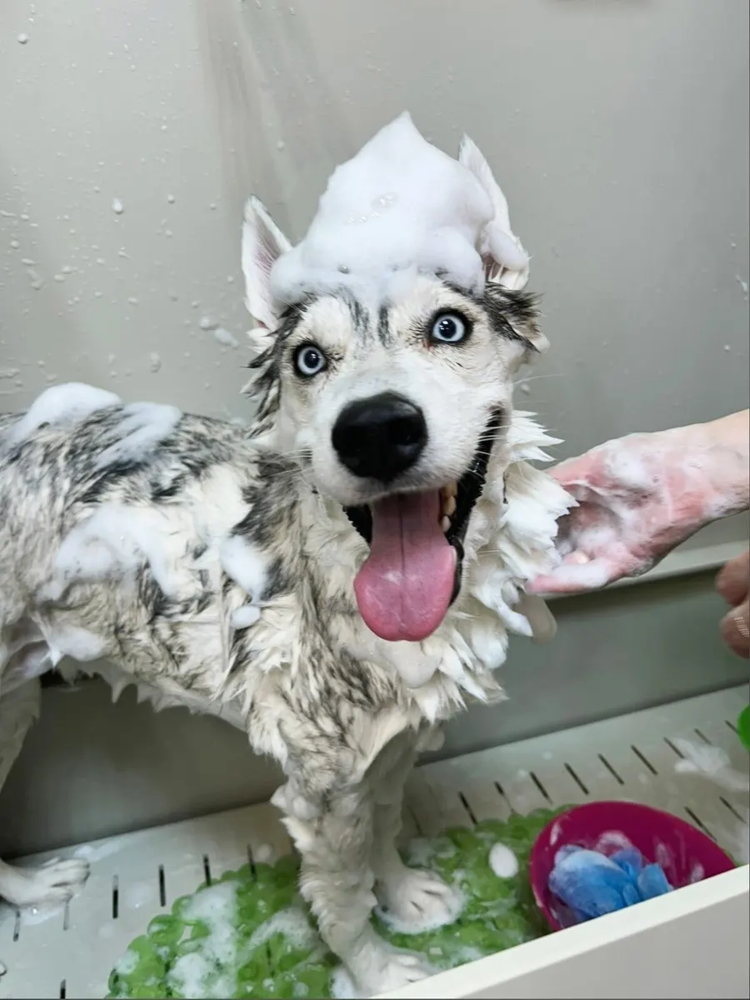

Груминг-салон · Пермь
Groomi: груминг собак и кошек в Перми с онлайн-записью
Выберите услугу, день и время - запись в одном сообщении. Стоимость назовёт мастер после осмотра питомца.
- Запись одним сообщением
- Ждём: ежедневно, 10:00–21:00
- 5,0 и 51 отзыв на Яндекс.Картах
Услуги
Стоимость называем после осмотра: она зависит от породы, размера и состояния шерсти.
Что можно выбрать
- Груминг кошек и собакв отзывах: груминг кошек и собакуточнить
- Вычёсывание линяющей шерстив отзывах: аккуратно уберут шерсть, вычешутуточнить
- Мытьё и сушкана фото в карточке: мытьё в ваннеуточнить
- Стрижка когтейв отзыве: подрежут коготочкиуточнить
Как записаться
Пишете нам
Расскажите, какой питомец и что нужно сделать, или выберите услугу, день и время в форме ниже.
Уточняем детали
Администратор подтверждает время и отвечает на вопросы.
Приходите с питомцем
Адрес: Пермь, улица Глеба Успенского, 22.



Что пишут гости
Опытные мастера
В отзыве: мастера видно что опытные, всё сделано качественно.
Бережное отношение
В отзыве: ласковое, уважительное и спокойное отношение грумеров к животным.
Приемлемые цены
В отзывах: цена приемлемая, отличное качество услуг по приемлемым ценам.
Отзывы с Яндекс.Карт
«Если вы ищете грумера для своего юного питомца — вам точно сюда. Мы с нашим 8 месячным непоседой шпицом Балу в полном восторге. Главное, что понравилось это подход. Мастер не просто сделала свою работу, а нашла контакт именно с нашим щенком, учла его возраст и характер. Всё прошло без стресса, слез и испуга. Спасибо за такое трепетное отношение к нашим малышам. Вы лучшие!»
Сергей . · 5 декабря 2025
«Были на экспресс - линьке 9 ноября 2025 года. Хочу оставить отзыв! Салон уютный, чистый, есть парковка рядом, кому важно. Мастер замечательный и внимательный, к сожалению спешила и не запомнила имя её ((. Кошку очень замечательно вычесали, когда вернулась мне показали итог работы. Выражаю большую благодарность этим девушкам. Работа у них не лёгкая.Обязательно буду рекомендовать всём и сама вернусь.»
Глеб Мальцев · 13 ноября 2025
«Нам с кошкой очень нравится этот салон. Аккуратно уберут шерсть, вычешут, подрежут коготочки 💅 Цена приемлемая, мне всё нравится!»
Анастасия · 12 сентября
Отзывы с карточки на Яндекс.Картах.
Частые вопросы
Как записаться?
Выберите услугу, день и время в форме на странице или напишите в мессенджер. Администратор подтвердит запись.
Где вы находитесь?
Пермь, улица Глеба Успенского, 22. ежедневно, 10:00–21:00.
Сколько это стоит?
Стоимость называем после осмотра: она зависит от породы, размера и состояния шерсти.
Выберите время - подтвердим запись
- Адрес
- Пермь, улица Глеба Успенского, 22, Пермь
- Часы
- ежедневно, 10:00–21:00
- Телефон
- +7 (992) 223-33-16